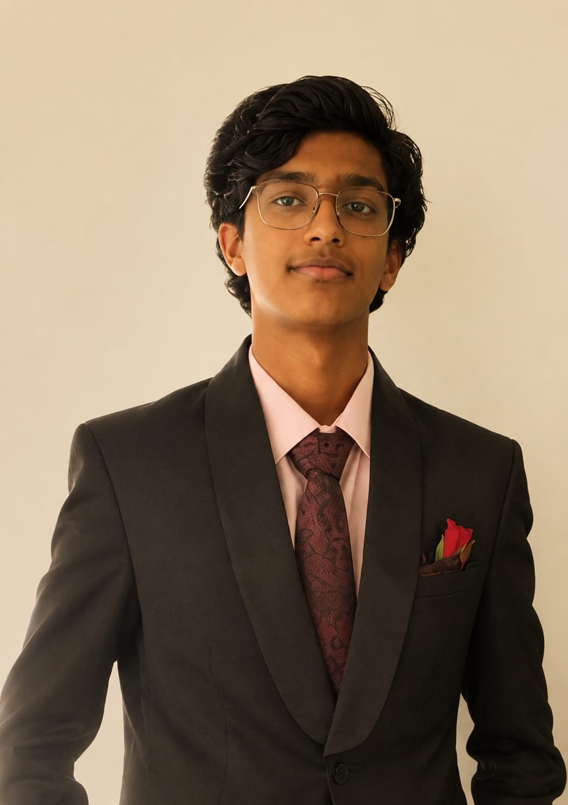
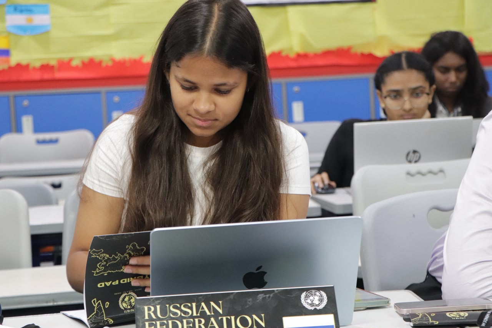
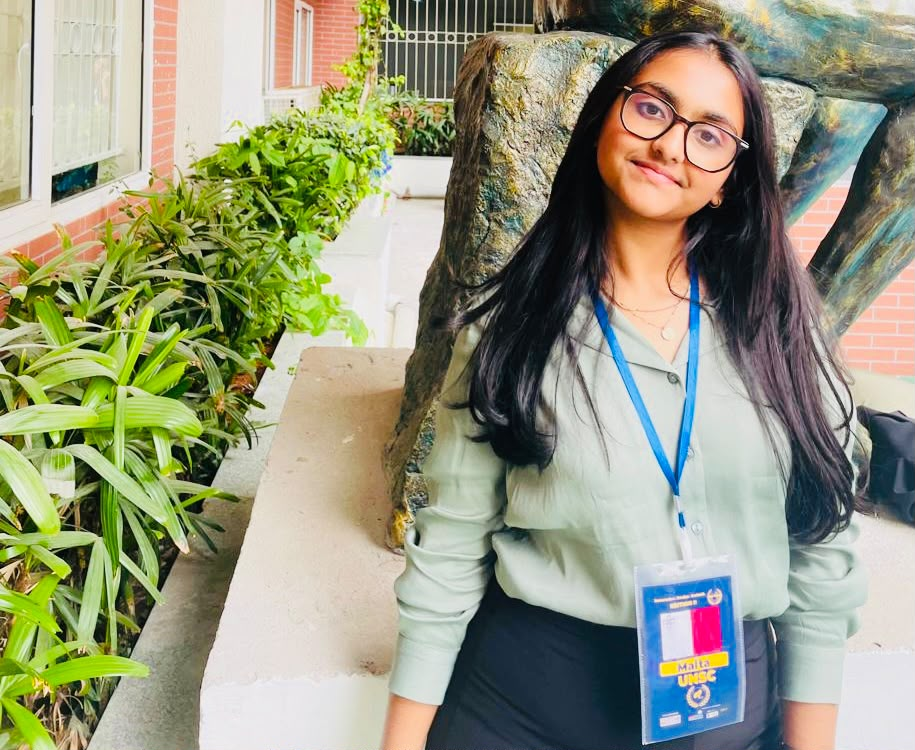

About the Committee
The UNHRC is responsible for the promotion and protection of all human rights around the globe. It addresses thematic human rights issues and responds to specific country situations through Universal Periodic Reviews and Special Procedures. The committee serves as a critical forum for debating civil, political, economic, and social liberties.
Agenda
The Impact of Artificial Intelligence-Enabled Warfare on the Protection of Human Rights in Armed Conflicts.
Background Guide
Executive Board

Co-President: Abhyudit Rajesh
Abhyudit Rajesh is honoured to serve as the Chairperson for UNHRC at DPSH MUN 2026. He is currently a DP1 student at CHIREC and is looking to pursue a degree in Politics, Philosophy and Economics from Oxford University. Since his journey began 2 years ago, there has been no turning back, and he has participated in over 20 conferences in both the capacity of a delegate and the Executive Board. He believes that MUNs are a great way to educate people about international political dynamics and to help the world in its evolution towards a better future—or, at the very least, towards the existence of one.Apart from MUNs, you might find him jamming on his drum set, passionately supporting FC Barcelona both on and off the pitch, or questioning global political decisions and cultural expectations.You may contact him anytime regarding any query you may have, and he looks forward eagerly to meeting you all at the conference!

Co-President: Hasini Kasuganti
Hasini Kasuganti is a DP1 student at the Chirec International School, interested in design and economics. She has been an active member of the circuit, attending close to 30 MUNs. She attempts to bring precision and empathy to every conference she attends. Apart from MUNs, you will find her listening to Sade on repeat. She looks forward to meaningful debate in UNHRC as the Vice Chair/Co-Chair.

Rapporteur: Pranavi Reddy Reddy
Pranavi Reddy is a 12th-grade Commerce student. Her interests range from economics and finance to leadership and community service, and she is always eager to take on opportunities that challenge her perspective. While she would describe herself as someone who enjoys staying organized and thinking ahead, those around her would probably call her approachable, dependable, and just the right amount of competitive. Having participated in numerous Model United Nations conferences over the years, she has come to appreciate that MUN is as much about listening and collaboration as it is about debate. As a member of the Executive Board, she looks forward to fostering an engaging committee where delegates feel encouraged to think critically, speak confidently, and leave with memories that extend beyond the conference itself.